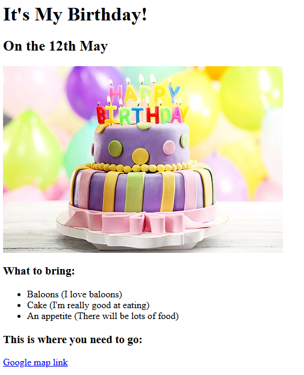
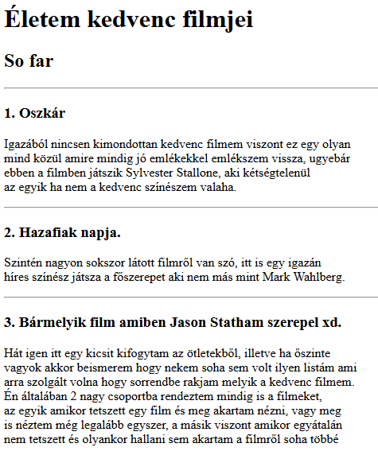

Ezek azok a kezdő makro projektek amiket tanultam eddig.

Ez volt az első talán igazi olyan Mini projekt ahol egy képet kellett becsatolni. A linkre kattintva
látható lesz a kód.

Ebben a rangsorban azt a készséget tudtam elsajátítani. Hogy! X mega D